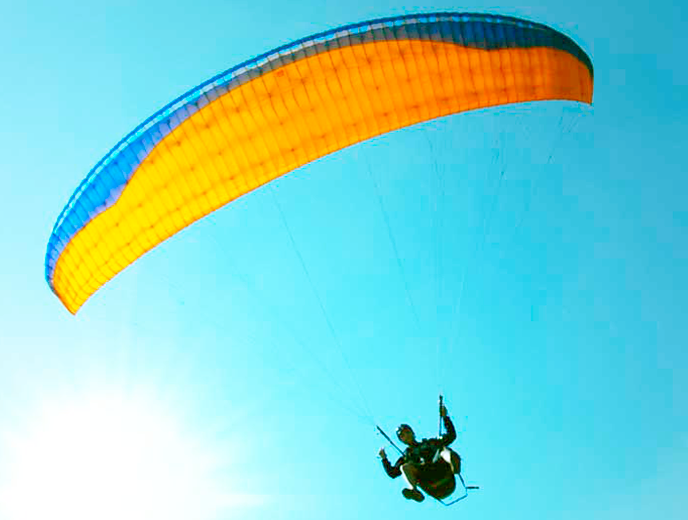

Destination
Bein around by many mountain, malang not only with mountain vacation, but our beach, culural spot, and Human interest os worth to experienced.


Batu
is a cite located in East Java Province of Indonesia. It is situated about 20 km to the northwest of Malang.